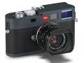
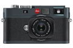

器材库 > 35mm画幅可换镜头数码相机 > M-E

规格总览
产品类型
35mm画幅可换镜头数码相机
发布日期
2012-09-17
厂家推荐价格
3,900.00 （英镑）
影像规格
影像传感器
CCD
影像传感器尺寸
23.9 x 35.8mm
总像素
1850万
有效像素
1800万
最大解像度
5212 x 3472
静态图像格式
JPEG, DNG
静态图像尺寸
5212 x 3472, 3840 x 2592, 2592 x 1728, 1728 x 1152, 1280 x 846
静态图像质量
标准，精细
画幅比
3:2
镜头和对焦
镜头卡口
Leica M
对焦模式
AF / MF
曝光控制
测光系统
Center-biased TTL
快门速度
1/4000s – 240s
曝光补偿
±3EV以1/3EV级调整
ISO感光度
80, 160, 200, 320, 400, 640, 800, 1000, 1250, 1600, 2000, 自动, 250, 500, 2500
白平衡
预设白平衡, 手动
自拍
12秒, 2秒
连拍
2 fps
取景器/显示屏
取景器
光学取景器
取景放大倍率
0.68倍
LCD尺寸
2.5英寸
LCD像素
23万
Live View
不支持
文件输入/输出
存储卡
SD/SDHC
数据接口
USB2.0
电源
电池
可充电锂电池
机身规格
颜色
灰色
尺寸
139 x 80 x 37mm
重量
585g
其它
配件端口
热靴
fabia2016-11-24 14:464.75 分
操作性 4.50功能性 4.50美观性 5.00趣味性 5.00耐用性 4.50性价比 4.50解像力 5.00色彩还原 5.00
散客2016-09-29 23:254.63 分
操作性 4.50功能性 4.50美观性 4.50趣味性 4.50耐用性 4.50性价比 5.00解像力 4.50色彩还原 5.00
naughtghost2016-02-17 14:194.69 分
操作性 5.00功能性 4.50美观性 5.00趣味性 4.00耐用性 5.00性价比 4.00解像力 5.00色彩还原 5.00
抱石斋主人2015-11-23 10:354.63 分
操作性 5.00功能性 4.50美观性 5.00趣味性 5.00耐用性 5.00性价比 2.50解像力 5.00色彩还原 5.00
豌豆公鼠2014-05-19 09:354.44 分
操作性 5.00功能性 4.50美观性 5.00趣味性 5.00耐用性 5.00性价比 1.00解像力 5.00色彩还原 5.00
蜜蜂0072013-11-13 20:145 分
操作性 5.00功能性 5.00美观性 5.00趣味性 5.00耐用性 5.00性价比 5.00解像力 5.00色彩还原 5.00
lhy13663469222013-05-29 09:475 分
操作性 5.00功能性 5.00美观性 5.00趣味性 5.00耐用性 5.00性价比 5.00解像力 5.00色彩还原 5.00
尚未入门2012-12-25 11:463.88 分
操作性 4.00功能性 3.00美观性 4.50趣味性 4.50耐用性 4.50性价比 2.00解像力 4.00色彩还原 4.50
寸舟2012-10-25 22:524.88 分
操作性 5.00功能性 4.50美观性 5.00趣味性 5.00耐用性 5.00性价比 4.50解像力 5.00色彩还原 5.00
大坝2012-10-20 00:034.63 分
操作性 5.00功能性 4.50美观性 5.00趣味性 5.00耐用性 5.00性价比 3.00解像力 5.00色彩还原 4.50
产品图 / 样片

评测 / 相关文章
- 详细内容 （存档）
- ［资讯］免费更换 徕卡召回部分M系列相机锂电池 （存档）
- ［试用］徕卡M-E 我的Leica之旅 （存档）
- ［资讯］徕卡携M、S系列新品亮相Photokina 2012 （存档）